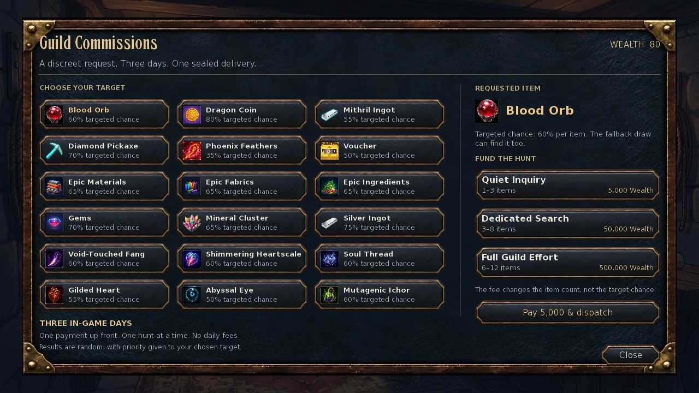
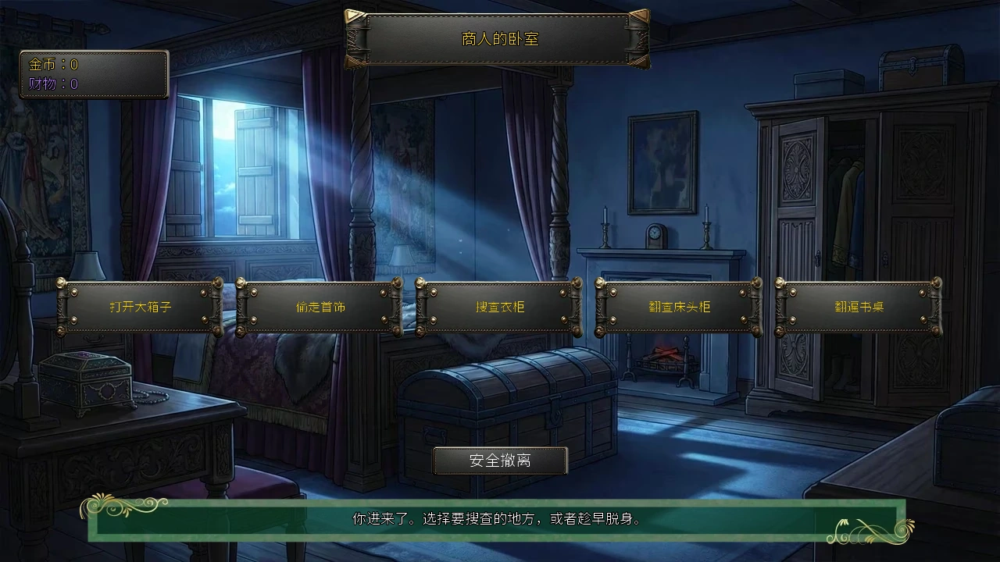
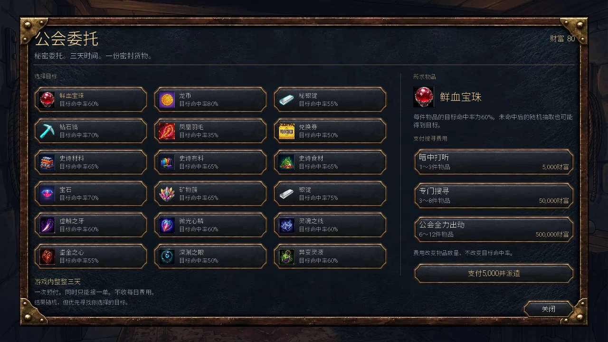

Select a screenshot to enlarge it. Screens show example inventories and progress.
The Thieves Guild is reached through Back Alleys in Medieval, Kings Demesne. Enter the public guild at night, reach the Hidden Chamber through Secret Door, then ask Arestes for initiation. Membership leads into house heists, fencing, targeted item commissions and specialist training.
- Enter the public guild through Back Alleys 22:00–05:00 and talk to Shadow on her schedule. Perception 45 also enables her alley scene 22:00–02:00.
- Reach Known with Shadow; prepare Lockpicking, Perception 60 and Rogue 35.
- Enter the guild at night, use Secret Door, then choose Arestes’s initiation action.
- Follow the trail and its follow-up jobs to open house heists and fencing.
Entrance, hours and the Hidden Chamber
Shadow’s alley scene requires Perception 45, but that scene is not an additional public-guild entry gate. The actual guild-entry action initially runs 22:00–05:00. Completing The Early Watch with Arestes and Keira moves entry earlier to 20:00, still ending at 05:00. The map building’s broad opening hours are not the initial entrance gate.
Inside, Secret Door requires Lockpicking and Perception 60 to reach the Hidden Chamber. Arestes is scheduled there all day; Shadow does not need to be physically present. Initiation takes 30 minutes and requires Rogue 35 plus Known with Shadow, with no higher Arestes relationship gate.
Shadow’s public-guild schedule is odd days 23:00–24:00 and even days 00:00–04:00. See Shadow for her other locations and personal actions. Check faction standing on the character sheet and current tasks in Objectives or the Notebook.
Useful training before the heists
| Action or skill | Requirement | Price and time | Result or base drain |
|---|---|---|---|
| Lockpicking | Ability 16 | $200 · 180 min | 50 Energy; 50 Calm |
| Get Advice | Once | $25 · 60 min | +3 Rogue |
| Train Rogue | Hidden Chamber | $100 · 60 min | 50 Energy; +1 Rogue |
| Investment Savvy | Arestes Known; Intelligence 19 | $500 · 120 min | 50 Energy |
| Pickpocketing Lessons | Shadow Known; Communication 40 | 30 min · once | +1 Rogue; +10 relationship |
| Shadow Step | Shadow Romantic; Ability 60 | 350 min | 180 Energy; 100 Calm; +30 relationship |
Lockpicking and Get Advice are in the public guild; Train Rogue and Investment Savvy are in the Hidden Chamber. Choose Shadow’s lessons while she is in the public guild. Shadow Step guarantees escape where ordinary fleeing is permitted; it does not remove every boss restriction, and Infinity Dungeons have separate escape rules.
Initiation trail and first jobs
After the initiation conversation, follow the clues in order. Each stop waits for the previous one; visiting a later place does not skip the trail. The final stop gives one Clout, followed by the public-guild and Kalb jobs.
Show the seven trail destinations
- Whispering Woods
- Tournament Grounds
- Arcane Shop
- Mountain Foothills
- Archery Range
- Castle Garden
- Back Alleys
Show the post-initiation job order (quest navigation)
| Order | Task | Where | Hours |
|---|---|---|---|
| 1 | Shadow's Rules | Thieves Guild | — |
| 2 | The Fox's Ears | Food Vendors | — |
| 3 | Clearing the Road | Caravan Rest Stop | 20:00–24:00 |
| 4 | Good News Travels Fast | Food Vendors | — |
| 5 | The Art of Acquisition | Gilded Row | 20:00–24:00 |
Follow the order. Shadow's Rules gives one additional Clout and Good News Travels Fast gives three. Completing the latter and reaching five Clout unlocks Gilded Row Surveillance, Break & Enter and fencing; the final explanatory scene does not require a completed heist first.
Clout and promotions
Promotions, commissions and gifts do not spend Clout. Return to the Hidden Chamber after reaching a threshold to let promotion scenes play; if another scene appears first, finish it and re-enter. Fencing is a reliable growth route; successful Search encounters, character jobs and daily thefts can also add Clout.
| Rank | Clout threshold | Main use |
|---|---|---|
| 1 · Initiate | 0 | — |
| 2 · Cutpurse | 10 | — |
| 3 · Burglar | 25 | Commission introduction |
| 4 · Prowler | 50 | — |
| 5 · Infiltrator | 80 | Noble Quarter heists |
| 6 · Shadowblade | 120 | Connected character progression |
| 7 · Phantom | 170 | — |
| 8 · Shade | 230 | Extra companion gate; see optional note below |
Final promotion’s extra companion gate (requirements only)
Beyond 230 Clout, Sophie must be an active worker and at Friend or higher. Then return to the Hidden Chamber.
Your first house heist
- Scout Gilded Row 06:00–18:00 with Surveillance: 60 minutes and 20 Energy. At least 51 Surveillance is needed; the cap is 150. More preparation is usually safer than entering at the minimum.
- Choose Break & Enter 22:00–04:00. First pass the approach check, then the lock. Inside, search up to five times or leave early to bank what you have.
- Each district allows one attempt per day. Success, detection or a failed lock consumes all its Surveillance. Midnight resets the daily attempt; unused Surveillance is retained.
- Failure loses this house’s unbanked haul and removes one Clout only when your current Clout is above five. Safe exit transfers the house’s gold and Valuables to you.
- Use Fence Valuables in the Hidden Chamber with at least ten Valuables. It sells your entire current stack for gold, Clout and Arestes relationship. Save Keira’s 150 Valuables before fencing if you want her item.
Noble Quarter requires 80 Clout and the rank-five promotion scene completed. Surveillance costs 25 Energy, with minimum 80 and cap 250. Its introductory scene runs 21:00–24:00; the actual break-in still runs 22:00–04:00. Rewards are higher, but the lock and searches are harder.
Heist risk and reward reference
The lock and indoor searches use base Rogue and base Ability; temporary stat boosts do not replace those base values. Modified Luck does affect approach, Surveillance and rewards. Leave early when the next search risks an already useful haul.
Show chances, diminishing returns and fencing calculations
- Each Surveillance visit uses base Perception + modified Luck / 2 as its baseline, rolls an integer around 50%–150% of that amount, then applies the district cap.
- Approach: min(90, floor(Surveillance − 50 + modified Luck / 10))%. Gloves can raise it to a 95% cap.
- Lock: floor((base Rogue + base Ability) / 200 × 100)%; use 300 for Noble Quarter. Cap 100%.
- Each indoor search: base Rogue / that attempt’s difficulty × 100%, rounded down, then Gloves; cap 100%. Gilded difficulties: 80/100/150/200/250. Noble: 100/140/200/300/400.
- For each search, gold and Valuables make separate integer rolls from 20 to max(21, modified Luck + base Perception). Gold multipliers are 1/.8/.6/.4/.2. Valuables divide the roll by ten, then use 1/.75/.5/.25/0. Noble multiplies both by 1.3 before rounding down. The fifth search therefore yields no ordinary Valuables.
- Safe exit has a 10% pickaxe roll: Copper on Gilded Row, Diamond in Noble Quarter. Noble also rolls a worker ring at successful searches × 1%; an active Luck buff doubles that ring chance.
- Fencing Clout: roll between floor(Valuables × .7) and floor(Valuables × 1.3), divide by ten and round down, minimum one. Gold: twice an integer roll from floor(Valuables × .5) to floor(Valuables × 1.5), plus an integer from one to modified Luck. Arestes separately gains 1–3 relationship.
Guild Commissions: pay for a targeted search
After the rank-three promotion at 25 Clout, select A Discreet Arrangement with Arestes for a 15-minute introduction. Then open Guild Commissions, choose a requested item and package, and pay the fee. Clout is an unlock threshold, not the payment.
| Package | Upfront fee | Total item units |
|---|---|---|
| Quiet Inquiry | $5,000 | 1–3 |
| Dedicated Search | $50,000 | 3–8 |
| Full Guild Effort | $500,000 | 6–12 |
Wait three full in-game days—72 hours from the dispatch time—then collect from Arestes. One hunt may be outstanding; a ready hunt still blocks another until collected. Its haul is fixed at dispatch and survives saving and loading. Collection has no extra fee.
Each item independently checks the requested target; a miss draws one item from the fixed random pool, which may also contain the target. Higher budgets increase quantity, not the per-item target rate, and a delivery can contain zero requested items.
Show all 18 targets and the random-pool contents
| Requested item | Targeted chance per unit |
|---|---|
| Blood Orb | 60% |
| Dragon Coin | 80% |
| Mithril Ingot | 55% |
| Diamond Pickaxe | 70% |
| Phoenix Feather | 35% |
| Voucher | 50% |
| Epic Materials | 65% |
| Epic Fabrics | 65% |
| Epic Ingredients | 65% |
| Gems | 70% |
| Mineral Cluster | 65% |
| Silver Ingot | 75% |
| Void-Touched Fang | 60% |
| Shimmering Heartscale | 60% |
| Soul Thread | 60% |
| Gilded Heart | 55% |
| Abyssal Eye | 50% |
| Mutagenic Ichor | 60% |
The 68-type random pool contains Food, Medicine, Energy supplies, Comfort, Gems, Leather, Components, Sea Shells and Phoenix Feathers; Common/Rare/Epic Materials, Fabrics and Ingredients; Chocolate, Flowers, Book, Teddy, Wine, Perfume, Lingerie and Jewelry; Time, Antidote, Power, Shield, Focus, Desire, Cologne and Luck consumables; Fishing Bait, Gemstone Heels, Valuables, Dragon Coin, Blood Orb, Voucher, Monster Tonic and Smelling Salts; Iron/Copper/Diamond Pickaxes, Iron/Silver/Mithril Ingots and Mineral Clusters; the six Infinity materials, seven worker equipment items and six Infinity special gifts.
A haul keeps at most five distinct non-target types; an extra type is redirected to an existing non-target type without reducing the unit count. Crystals, Chronium and Soul Stones are outside this pool.

Character routes and important unlocks
Meet Keira through the Back Alleys Search race, available 20:00–04:00 after at least ten Clout. Winning checks modified Ability and an independent upset roll, so even very high Ability does not guarantee victory. A win gives three Clout and opens her Back Alleys portrait 00:00–04:00. See Keira for her personal route.
Show equipment, training, promotion and side-route requirements
- Keira race: modified Ability is checked against 300, alongside an independent 85% pass. Maximum win chance is 85%.
- Roofline Drills: Keira Known, The Roofroads completed and Ability 35; 45 minutes, 25 Energy, once only. Gives +1 Ability, +1 Clout and +8 relationship.
- A Quiet Favor: Keira Friend; 45 minutes and 150 Valuables for Thieves Gloves. Gloves add five percentage points to supported chances, plus .1 point per Phantom Stone level when owned. Each chance retains its own cap.
- The Velvet Approach in the public guild: five Clout and Vixen Known; +1 Clout. The Arrangement: 120 Clout; +2 Clout and Shadow recruitment, without an extra requirement for the rank-six promotion scene to have completed.
- Arestes and Keira both Friend: return to the Hidden Chamber for The Early Watch, +1 Clout and earlier guild entry. Keira’s The Roofroads and Loose Tiles each add another Clout; see her guide for personal prerequisites.
- Request Guild Protection: own the Rose & Thorn and have 180 Clout; pay $10,000 once for +1 Promotion level. Its actual gate is higher than rank seven’s 170.
- Arestes’s Assassin training: 350 Clout, 300 minutes, 150 Energy and 150 Calm; Clout is retained. At 500 Clout, a separate 30-minute action gives Dark Consolador. Use Specialist Classes for path effects and growth.
- Phantom Stone route: Shadow active as a worker, Arestes/Keira/Shadow all Romantic, and both Thieves Gloves and Dark Consolador owned. Return to the public guild, then to the Hidden Chamber after receiving the stone. Use Soul Stones for its growth.
Black Market and common blockers
The public guild also leads to the Black Market. One Rare Material, Ingredient or Fabric costs $30 and ten minutes. Its 15-minute trades exchange 25 Rare Materials for one Epic Ingredient, 25 Rare Ingredients for one Epic Fabric, or 25 Rare Fabrics for one Epic Material. These spend the stated resources, not Clout.
- No Hidden Chamber entrance: learn Lockpicking and check Perception 60.
- Enough Clout but no commissions: complete the rank-three scene in the chamber, then Arestes’s 15-minute introduction.
- Break-in unavailable: check district Clout/promotion, 22:00–04:00 hours, minimum Surveillance and today’s attempt.
- Protection unavailable at 170: this service requires 180, not 170.
- Missing scene or character: check location, odd/even day, time and current Objectives; travelling characters may be temporarily absent.
盗贼公会位于中世纪的国王领地，经后巷进入。夜间进入公开公会、穿过暗门抵达密室，再向Arestes申请入会。之后可进行住宅窃盗、销赃、定向物品委托与专门训练。
- 22:00–05:00从后巷进入公开公会；在她的时段与Shadow交谈。感知45时，后巷另有22:00–02:00的相遇场景。
- 将Shadow关系提高到已知，并准备开锁、感知60与盗贼35。
- 夜间进公会，穿过暗门，在Arestes头像中选择入会考验。
- 跟随线索后，按后续指引打通住宅窃盗与销赃。
入口、时段与密室
后巷的Shadow相遇场景需要感知45，但它不是公开公会入口的额外条件。最初进入公会的行动限22:00–05:00；完成Arestes与Keira的提前值夜后，可提前至20:00进入，仍在05:00结束。不要只看地图建筑的开放时间。
公会内的暗门需要开锁技能与感知60，通向隐藏密室。Arestes在密室全天出现；抵达她所在处后，不必等Shadow也到场。入会考验为30分钟，要求盗贼35、Shadow已知；Arestes本人无需额外关系阶段。
Shadow的公开公会时段为奇数日23:00–24:00、偶数日00:00–04:00。其他地点与私人互动见Shadow指南。在角色面板查看盗贼公会声望，在目标或笔记本中核对当前任务。
入口处就能做的训练
| 行动或技能 | 门槛 | 费用与时间 | 结果或基础消耗 |
|---|---|---|---|
| 开锁 | 能力16 | $200 · 180分钟 | 50精力、50镇定 |
| 寻求建议 | 仅一次 | $25 · 60分钟 | 盗贼+3 |
| 训练盗贼技巧 | 密室 | $100 · 60分钟 | 50精力；盗贼+1 |
| 投资眼光 | Arestes已知；智力19 | $500 · 120分钟 | 50精力 |
| 扒窃课程 | Shadow已知；沟通40 | 30分钟 · 仅一次 | 盗贼+1；关系+10 |
| 影步 | Shadow浪漫感；能力60 | 350分钟 | 180精力、100镇定；关系+30 |
开锁、寻求建议在公开公会；训练盗贼、投资眼光在密室。Shadow的两项课程在她出现于公开公会时选择。影步只保证允许逃跑的普通遭遇撤退，不能解除所有首领的逃跑限制；无尽地下城另有规则。
入会线索与首次工作
入会对话后按线索依序到访。每一处都要完成上一处后才触发；到错地点不会跳过步骤。最后一段给1声望，随后继续公开公会与Kalb的任务。
展开七站线索答案
- 低语森林
- 锦标赛场地
- 奥术商店
- 山脚
- 射箭场
- 城堡花园
- 后巷
展开入会后的工作顺序（任务导航）
| 顺序 | 任务 | 地点 | 时段 |
|---|---|---|---|
| 1 | Shadow的规矩 | 盗贼公会 | — |
| 2 | 狐狸的耳朵 | 食物摊贩 | — |
| 3 | 清理道路 | 商队休息站 | 20:00–24:00 |
| 4 | 好消息传得快 | 食物摊贩 | — |
| 5 | 取物的艺术 | 鎏金街 | 20:00–24:00 |
按顺序推进；Shadow的规矩另给1声望，好消息传得快给3声望。后者完成并达到5声望后，鎏金街住宅窃盗、踩点与销赃已经开放；最后的鎏金街说明场景不会要求你先完成一次窃盗。
声望与晋升
声望不会因晋升、申请委托或领取物品而被扣除。达到门槛后回密室，让晋升场景触发；一次到访若出现其他剧情，处理后再次进入。销赃是稳定的成长来源；成功的搜寻、人物支线和每日偷窃也可能增加声望。
| 阶级 | 所需声望 | 主要用途 |
|---|---|---|
| 1 · 入会 | 0 | — |
| 2 · 扒手 | 10 | — |
| 3 · 窃贼 | 25 | 公会委托的介绍 |
| 4 · 潜行者 | 50 | — |
| 5 · 渗透者 | 80 | 贵族区住宅窃盗 |
| 6 · 影刃 | 120 | 相关人物后续 |
| 7 · 幽影 | 170 | — |
| 8 · 暗影 | 230 | 另有同伴条件，见下方可选提示 |
最后一次晋升的额外同伴条件（只含条件）
230声望之外，还需Sophie作为活跃员工，且与Sophie达到朋友。完成后再回密室。这里不涉及她的身份或该场景结果。
首次住宅窃盗
- 白天06:00–18:00在鎏金街使用踩点：60分钟、20精力。踩点累计至至少51点才可尝试，最多150点；多踩点通常比刚够门槛就行动更稳妥。
- 22:00–04:00选择破门潜入。先检查接近住宅，再检查锁；进入后最多进行5次搜索，也可提前离开保住已拿到的东西。
- 每区每天只能尝试一次。成功、被发现或锁失败都会消耗该区全部踩点点；午夜重置当天次数，未使用的踩点点不会随午夜清空。
- 失败只丢本次住宅内尚未带出的战利品；声望高于5时再扣1。安全离开才把本次金币与贵重品放入背包。
- 在密室销赃：至少10贵重品，一次交出当前全部数量，换金币、声望与Arestes关系。不要把准备留给Keira的150贵重品一起卖掉。
贵族区需要80声望与第5阶晋升场景完成；踩点每次25精力，最低80、上限250。其说明场景在21:00–24:00触发，实际潜入仍限22:00–04:00。贵族区收益较高，锁与后续搜索也更难。

风险与收益参考
锁与室内搜索看基础盗贼和基础能力；临时属性增益不会代替这些基础数值。运气的修正值会影响接近、踩点与收益。若下一次搜索把握不大，提前离开能保住已取得的战利品。
展开几率、递减收益与销赃计算
- 踩点每次增加：以基础感知＋当前运气÷2为基准，在其约50%–150%间随机取整数，再受该区上限限制。
- 接近成功率：min(90, 取整(踩点−50＋当前运气÷10))%；手套加成后上限95%。
- 开锁成功率：取整((基础盗贼＋基础能力)÷200×100)%；贵族区分母为300，上限100%。
- 五次室内搜索的成功率为基础盗贼÷本次难度×100%，再加手套加成，上限100%。鎏金街难度依序80/100/150/200/250；贵族区100/140/200/300/400。
- 每次搜索分别随机取20至max(21, 当前运气＋基础感知)的整数。金币乘1/0.8/0.6/0.4/0.2；贵重品先除10，再乘1/0.75/0.5/0.25/0；贵族区两者再乘1.3，最后向下取整。因此第5次通常没有贵重品。
- 安全离开有10%几率获得镐子：鎏金街为铜镐，贵族区为钻石镐。贵族区另有员工戒指，几率为成功搜索次数%；幸运增益使这项戒指几率翻倍。
- 销赃声望：在贵重品数量的70%–130%之间随机取整数，除10后向下取整，最低1。金币为随机取整(数量×0.5)至取整(数量×1.5)的整数×2，再加1至当前运气的随机整数；Arestes关系另加1–3。
公会委托：花钱搜寻物品
完成第3阶晋升（25声望）后，向Arestes选择秘密约定，花15分钟了解服务。之后选择公会委托，选目标物品和预算并付款；声望只作解锁门槛，不会扣除。
| 方案 | 预付费用 | 本次物品总件数 |
|---|---|---|
| 暗中打听 | $5,000 | 1–3 |
| 专门搜寻 | $50,000 | 3–8 |
| 公会全力出动 | $500,000 | 6–12 |
从付款时刻起等待整整3个游戏日（72小时），再回Arestes领取。一次只能有一份委托；到期后仍须领取，才能再派下一份。物品在派出时即确定，存档读档不会重新抽取；领取不再收费。
每件物品独立检查是否命中目标，否则从固定随机池中取一件；即使未命中，随机池仍可能抽到所求物品。提高预算只增加件数，不提高每件的目标命中率；目标数量可能为0。
展开全部18个可选目标与随机池范围
| 目标 | 每件目标命中率 |
|---|---|
| 鲜血宝珠 | 60% |
| 龙币 | 80% |
| 秘银锭 | 55% |
| 钻石镐 | 70% |
| 凤凰羽毛 | 35% |
| 兑换券 | 50% |
| 史诗材料 | 65% |
| 史诗布料 | 65% |
| 史诗食材 | 65% |
| 宝石 | 70% |
| 矿物簇 | 65% |
| 银锭 | 75% |
| 虚触之牙 | 60% |
| 微光心鳞 | 60% |
| 灵魂之线 | 60% |
| 鎏金之心 | 55% |
| 深渊之眼 | 50% |
| 异变灵液 | 60% |
随机池共68种：食物、药品、精力补给、舒适用品、宝石、皮革、组件、海贝壳、凤凰羽毛；普通／稀有／史诗的材料、布料、食材；巧克力、花、书、玩偶、葡萄酒、香水、内衣、珠宝；时间、解毒、力量、护盾、专注、欲望、古龙水、幸运类消耗品；鱼饵、宝石高跟鞋、贵重品、龙币、鲜血宝珠、兑换券、怪物滋补剂、嗅盐；铁／铜／钻石镐、铁／银／秘银锭、矿物簇；六种无尽地下城素材；七件员工装备与六种无尽地下城特殊礼物。
一份货物最多保留5种不同的非目标物品；超出的随机种类会合并成已有非目标物品，件数不会因此减少。水晶、时源矿与灵魂石不在这个随机池中。

人物路线与重要奖励
Keira先通过后巷20:00–04:00搜寻时遇到的比赛认识：至少10声望才会提供挑战。胜率同时看当前能力与独立的意外判定，能力很高也不是必胜；获胜给3声望并开放她00:00–04:00的后巷头像。Keira指南包含她的私人支线。
展开装备、训练、宣传与支线门槛
- Keira比赛：当前能力对300进行判定，同时还需通过独立85%判定；最高85%胜率。
- Keira的屋脊训练：已知、屋顶之路完成、能力35；45分钟、25精力，仅一次，能力+1、声望+1、关系+8。
- Keira的静默委托：朋友，45分钟，消耗150贵重品，获得盗贼手套。手套给适用判定加5个百分点；拥有幻影之石后，每级再加0.1个百分点，各项判定仍各有上限。
- 公开公会的天鹅绒般的手法：5声望、Vixen已知，声望+1。安排：120声望，声望+2并招募Shadow；不另外要求第6阶晋升场景完成。
- Arestes与Keira都达到朋友后，回密室触发提前值夜，声望+1并提前公会入口时间。Keira另有屋顶之路和松动的瓦片，各给1声望，完整关系与前置见人物指南。
- 申请公会保护：拥有玫瑰与荆棘、180声望，支付$10,000，仅一次，宣传等级+1。实际门槛比第7阶的170更高。
- Arestes刺客训练：350声望，300分钟、150精力、150镇定；不消耗声望。500声望时另可花30分钟领取暗影慰藉者。三条职业路线的效果与成长见专精职业。
- 幻影之石路线：Shadow为活跃员工，Arestes／Keira／Shadow均达到浪漫感，同时持有盗贼手套与暗影慰藉者；回公开公会触发相关任务，得到石头后回密室继续。石头成长见灵魂石。
黑市与常见卡关
从公开公会可以进入黑市。稀有材料、食材、布料每份$30、10分钟；另可花15分钟用25稀有材料换1史诗食材、25稀有食材换1史诗布料，或25稀有布料换1史诗材料。三种交换各自消耗所列资源，不会花声望。
- 看不到密室入口：先学开锁，再检查感知60。
- 有足够声望但委托不可用：先回密室完成第3阶晋升，再选择Arestes的15分钟介绍。
- 住宅行动灰色：核对该区声望／晋升、22:00–04:00、最低踩点及当天是否已尝试。
- 声望达到170却不能买保护：这项服务要求180，不是170。
- 任务或人物没出现：核对地点、奇偶日、时段和当前目标；旅行中的角色还可能暂时不在。
Adapted and updated from the community Chronoromancer Wiki. Community source and history · CC BY-SA 4.0. Game images © Chronoromancer Studio.